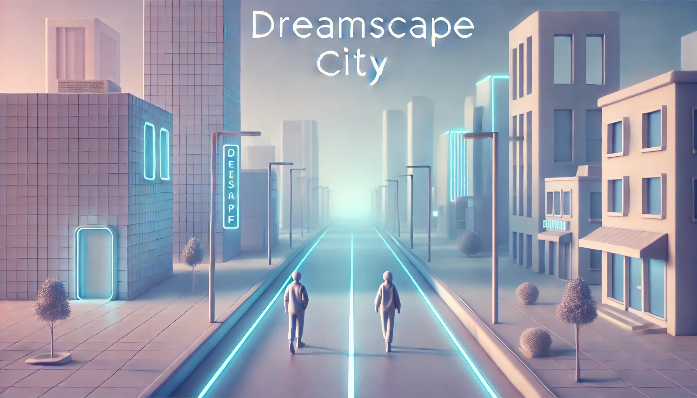

Dreamscape City is a futuristic vision of a serene, technologically advanced cityscape. The project captures a minimalist environment with soft neon lighting and modern aesthetics. In the scene, two individuals walk peacefully down the street, symbolizing humanity’s coexistence with innovation and progress. The glowing "Dreamscape City" title reflects the city’s dreamlike and forward-thinking ambiance. This project envisions a harmonious blend of simplicity and futuristic design, perfect for inspiring imagination and creativity in a new era of urban development.
Welcome to DreamScape City, where imagination meets innovation. I am passionate about creating a world that transcends the ordinary, blending cutting-edge technology with breathtaking design to craft extraordinary experiences. Every project I undertake is an opportunity to build something that inspires and captivates, pushing boundaries and redefining what’s possible. Join me on this journey as we explore the future of urban living, one visionary step at a time.

A city of the future combining technology and sustainability. Features include:
-->Smart Buildings with energy-efficient designs, solar panels, and green roofs.
-->Automated Roads for self-driving cars with smart traffic systems and interactive pedestrian zones.
-->Sustainable Power using renewable energy like solar and wind, with decentralized energy grids.
-->Green Spaces such as parks and vertical gardens for better air quality and outdoor living.
-->Zero-Waste Systems with advanced recycling and waste management.
-->Eco-Friendly Transport including electric buses, hyperloop trains, and drone taxis.
-->AI-Integrated Services optimizing traffic, waste, and energy use in real-time.
-->Water Management with efficient filtration and rainwater recycling.
-->This infrastructure creates a sustainable, smart, and comfortable urban environment for future generations.
In a futuristic city, roads are designed for self-driving cars and smart systems. Key features include:
-->Self-Driving Vehicles: Autonomous cars, buses, and drones move efficiently on dedicated lanes.
-->Smart Traffic Systems: Traffic adjusts in real-time to minimize congestion.
-->Interactive Pedestrian Zones: Augmented reality offers navigation and information for pedestrians.
-->Sustainable Pavement: Eco-friendly roads with solar panels generate energy.
-->This creates a smooth, efficient, and safe transportation experience, enhancing urban life.
Futuristic homes are connected through IoT, offering convenience, efficiency, and security. Key features include:
-->Automated Systems: Lights, heating, and appliances adjust automatically.
-->AI and Voice Control: Manage your home with voice commands or AI assistants.
-->Energy Efficiency: Smart thermostats and solar panels reduce energy use.
-->Advanced Security: Facial recognition and remote monitoring ensure safety.
-->Health Monitoring: Devices track wellness and air quality.
-->Smart homes provide a comfortable, secure, and efficient living environment.
Futuristic cities feature parks, vertical gardens, and green corridors for relaxation and outdoor activities. Key features include:
-->Sustainable Design: Eco-friendly landscaping with native plants and water-efficient systems.
-->Community Hubs: Spaces for events, markets, and cultural activities.
-->Biodiversity: Habitat for wildlife, improving air quality and urban ecosystems.
-->These green areas enhance well-being and create a harmonious balance between nature and urban life.
Futuristic cities focus on sustainability with advanced waste management systems. Key features include:
-->Automated Sorting: Efficient sorting of recyclables and waste.
-->Zero-Waste System: Continuous reuse and recycling of materials.
-->Composting and Bio-Waste: Organic waste converted into bioenergy.
-->Recycling Centers: High-tech facilities process materials for reuse.
-->Public Education: Tools to teach proper waste disposal.
-->This system promotes sustainability and reduces waste, creating a cleaner city.
Futuristic cities feature efficient, eco-friendly transport. Key features include:
-->Autonomous Vehicles: Self-driving buses, trains, and taxis.
-->Hyperloop & High-Speed Trains: Fast, energy-efficient travel.
-->Electric Buses: Emission-free, powered by renewable energy.
-->Smart Ticketing: Digital, cashless payment system.
-->Real-Time Tracking: AI updates on routes and arrival times.
-->This system improves mobility, reduces congestion, and supports sustainability.
Futuristic cities use AI to optimize daily life. Key features include:
-->Smart Infrastructure: AI manages traffic and public services.
-->Personalized Services: Tailored healthcare, shopping, and entertainment.
-->Data-Driven Governance: Improved city planning and resource distribution.
-->Environmental Monitoring: AI tracks and improves air quality and pollution.
-->Safety & Security: AI-powered surveillance for enhanced safety.
-->AI integration ensures a more efficient, safe, and personalized urban experience.